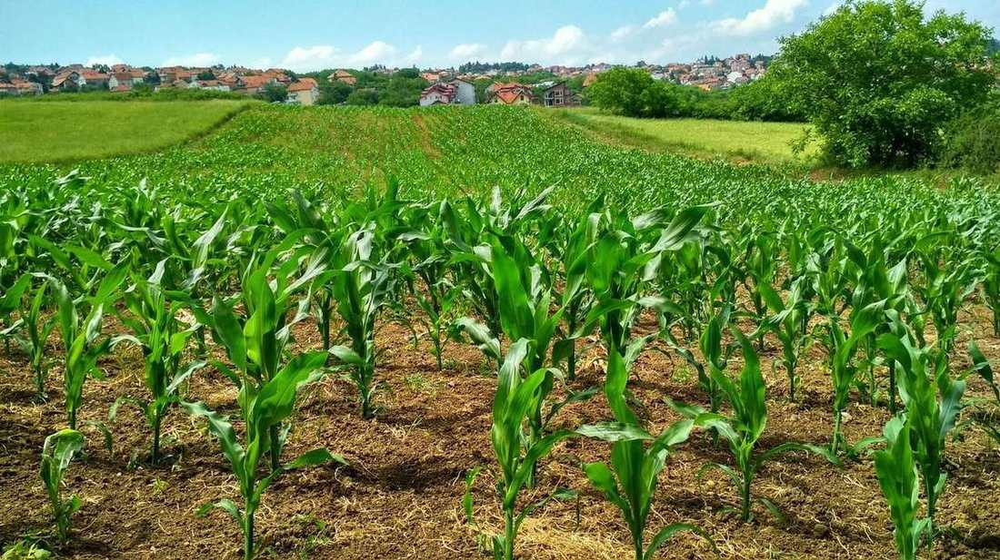

180 cv
Campo 180
Trator de lavoura para grade e plantio. Referência ilustrativa: R$ 420 mil.
O trator que puxa a grade e a plantadeira de 30 linhas sem pedir socorro no fim do dia.
- Potência
- 180 cv
- Uso
- Preparo e plantio
- Valor ilustrativo
- R$ 420.000
- Oficina
- Revisão de entrega em LEM